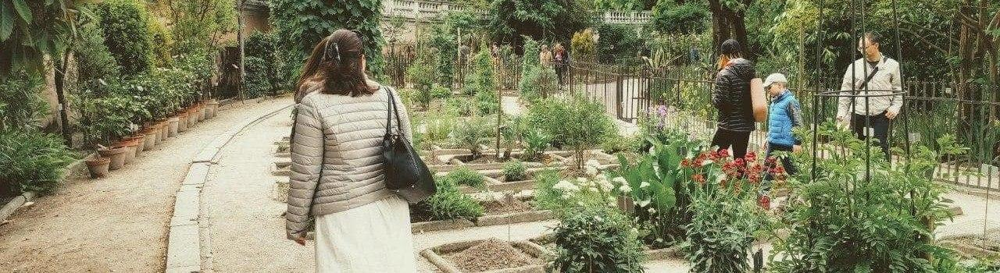

Esplora i prodotti della mia vetrina, ovunque tu sia.
L'Erbolario
Danza di Fiori
22,90€
Erboristeria Alchimia si preoccupa spesso di organizzare eventi a scopo informativo o promozionale.
Una serata informativa gratuita per scoprire lo stretto legame fra intestino e cervello
Con: Paolo Biasi (naturopata), dr.ssa Marika Dorigo (erborista)
Lunedì 13 maggio - 20:15
Ex Scuola Elementare di Tamai
Esplora la mia collezione di tè, infusi e tisane che ho pensato per voi.
Il fascino dell'antica Cina rivive in questa miscela che unisce il tè Oolong con la frutta.
Thè Oolong, frutta candita, calendula fiori, fiordaliso fiori, aromi.
Scopri i passi che mi hanno portato fino a qui.
 La mia storiaVisita la mia pagina facebook per rimanere sempre aggiornato su eventi e promozioni o semplicemente per metterti in contatto con me.
Erbalchimia su facebook